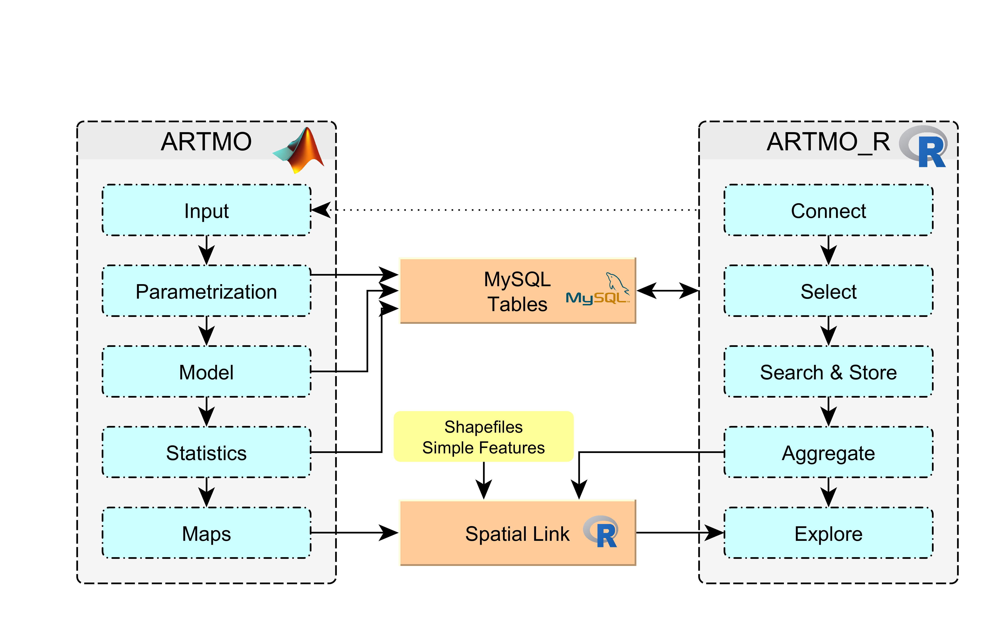

A few months ago I started searching a software solution for predicting biophysical parameters for my PhD thesis. Especially biophysical parameters such as the LAI are interesting for my research. During the literature research i got more and more in contact with Prosail Radiative Transfer Models created exactly for the beforementioned purpose. Several approaches have already been implemented in different programming languages in the past.
One of them is the ATMO Software. It allows to compute RTMs with several approaches as well as statistical evaluation making it a powerful tool for biophysical parameter retrieval. During my first tries with the ARTMO software I was impressed by the range of possibilities it provides to the user. It offers the assessment of biophysical parameters by means of Machine Learning Algorithms and a Lookup Table Inversion. At the same time it computes several Vegetation Indices (VIs) and allows a very deep and detailed parametrization as well as analysis. The last - and in my opinion - most interesting part is the application of the models to maps in order to create maps of e.g. LAI.
The more data and results I’ve generated, however, the more I got lost in the high amount of data and information generated. Especially when it came to comparing projects or models I had trouble to unify the data and evaluate the Model performance or parametrization without mixing things up. Also when adding maps to the workflow I ad some problems to the link them to the statics and parameters a-posteriori resulting in some confusion at the end of the analyses.
At the same time I’m a huge supporter of open software solutions and started using R during my master thesis. Even thougn ARTMO is completely written in Matlab I noticed several possibilities where R could come in handy during the data analysis both as a connector to the MySQL backend as well as the Spatial interpretation
ARTMO_R is intended to easen the analysis of the Models generated with ARTMO. It is NOT intended to replace any core functionality of ARTMO. We are implementing function fo tidying and cleaning the data and for creating a workflow for analyses with ARTMO. We are also developing possibilies to automatically generate ARTMO inputs (e.g. Validation Tables) and to include spatial analyses combining the ARTMO model statistics, generated maps as well as ground truth data.
The following chart evidences schematically the way ARTMO_R is working within the ARTMO environment. 
As for now, being under active development, the functions provided in this repositoy are not yet aggregated to a package but loose in several scripts. In future we could think about collecting the functions and built a package from them. Always depending on the real user interest. But first things first.
This code aims at explaining the central functions needed for the access to the backend behind ARTMO in order to extact the most important variables and to combine the dispersed MYSQL tables in one single data frame. Therefore we used the tibble as well as the tidyverse approach fo a unified workflow. Since we have to deal with several thousands of data samples (depending on the database) the approach of utilizing nested tibbles turned out to be extremely useful especially when it came to heavy RAM usage.
Any help or suggestions are absolutely welcome. Don’t hesitate to contact me via mail (mattia.rossi@eurac.edu) or to open new issues in the Github Repository